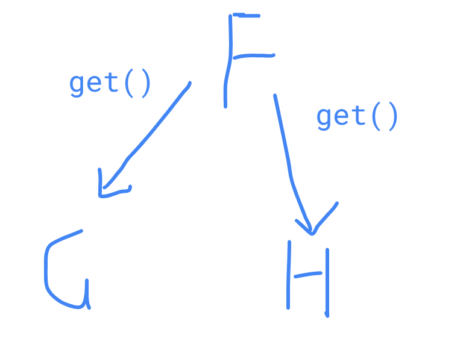

- Introduction
- Abstractions
- Thread
- Conditional Synchronization
- Properties of Corrections
- Parallelism
- Future
- Memorization
- Determinism
- Parallelism Loop
- Phaser
- Producer/Consumer
- Reader/Writer
- Dining Philosopher Problem
- Volatile
- Busy Waiting
- Semaphore
- Lock
- Monitor
- Exchanger
- CountDownLatch
- CyclicBarrier
- Concurrent Collections
- Thread Pool
- Reference
Introduction
At the beginning, a program ran from start to finish, it had access to all resources on the system. Nowadays with operating systems we are allowed to run various programs simultaneously in processes independent of the hardware architecture we have.
Reason
- Take advantage of the IO operations waiting time to do other tasks.
- A better strategy, sharing resources instead of waiting them.
- Divide into various independent tasks.
Process
The execution of a computer program. Each process had its own memory space for instructions and data. The same computer program can run multiple times, with some overlap and simultaneously.
Sequential Model
They executed the instructions sequentially, interacting with the outside to through I/O where it is perfectly defined what instruction will run next.
Concurrent Process
P1 and P2 are said to be two processes concurrent if the first instruction of one of them run between the first and the last instruction of the other. They can be independent, competing the resources or cooperative. The interations between concurrent processes are carried out through the synchronization and communication. The order of instructions is not guaranteed. The results of executions may vary.
Multiprocess
They run in different processors at the same time.

Multiprogramming
They are assigned to the same processor and execute in different time slots. You can take advantage of the processor while a process waits for input/output.
Race Condition
In the concurrent context, multiple control flows can access, modify the same resource at the same time and produces unexpected result.
Atomic Operation
An atomic statement is an instruction that execute as a single indivisible unit.
Fine-Grained
Machine Level Intruction
Coarse-Grained
A set of instruction execute in conjunction as a single unit.
Critical Section
It is code segment that accesses shared variables and has to be executed as an atomic action.
Preprotocol/Postprotocol
The pre-protocol and post-protocol are the sequences of instructions that the processes must execute to ensure that the instructions in the critical section are executed in compliance with the requirements.
Mutual Exclusion
Mutual exclusion is used to prevent race conditions. hence prevents simultaneous access to a shared resource. Only one of the processes can access the resource at same time and the others have to wait. When a process releases the exclusive access resource and another process was waiting, the waiting process will access the resource. Mutual exclusion allows creating coarse-grained atomic statements.
Abstractions
We use abstractions that allow us to abstract from details about system architecture.
- Each process is considered to run on its own processor.
- The relative speeds of each process are ignored, making it possible to consider only the sequences of instructions being executed.
- The sequences of execution of the atomic actions of all processes are considered to be interleaved in a single sequence completely without interference.
All the abstractions can be summarized as the study of the sequences of interleaved execution of the atomic instructions of the sequential processes.
Thread
They allow different control flows of a program coexist within the same process. They share resources like memory, but each has its own program counter, stack and local variables. They are sometimes called light processes, and many operating systems consider them the basic units planning. Operating Systems take care of scheduling threads and assigning to different processors as they’re available to run simultaneously and asynchronous with respect to each other. They share process stask, so everyone has access to them, allowing share data more efficiently.
- Create: When an instance of Thread is created (via new Thread(Runnable target)), it does not start executing right.
- Start: The threads start running when invokes the start() method of the Thread class.
A program ends its execution when
- All its threads have finished their execution
- The System.exit() method is executed
A thread ends its execution
- When all your statements have been executed
- When an unchecked exception is raised (RuntimeException) in the run() method
- User cancellation
- Timeout
-
Events that trigger in other threads
-
Interruption with Thread.interrupt()
- We should periodically check if another thread has interrupted this thread.
- We will receive InterruptedException if the theread is blocked.
- etc…
-
Interruption with Thread.interrupt()
When a thread finishs it should release resources appropriately, close connections, and leave objects in a stable state.
If A thread wants to wait for another thread to end then invokes the join() method on the Thread class object that represents that thread.
Daemon
Daemon threads ends automatically when all non-daemon threads in a program have ended. A thread is a demon if the thread that creates it is also a demon. The isDaemon() and setDaemon() methods allow you to change this property of threads.
Priority
The priority of a new thread is the same as the parent thread. The SO will respect the Java thread priority as far as possible.
- setPriority(int p): Set the priority. Its value must be between Thread.MIN_PRIORITY and Thread.MAX_PRIORITY
- int getPriority(): Returns the priority of the thread.
Group
Threads can be grouped into groups represented by ThreadGroup. A ThreadGroup can have other groups of threads inside, creating a tree structure.
- Limit the priority of the threads that contain
- Manage certain properties of threads together
Properties
- Thread.currentThread()
- .getName()
- isAlive()
- getState(): Returns the state of the thread (new, executing, waiting …)
Conditional Synchronization
Occurs when one or more process must wait for a certain condition to be met to continue its execution. That condition must be set by another process.
Barrier Synchronization
Barrier is a conditional synchronization in which the processes have to wait for the rest of the processes to reach the same point in order to continue their execution.
Properties of Corrections
We use them to judge if a concurrent algorithm is correct. They must be complied with in any possible intercalation of atomic instructions.
Safety
- Mutual Exclusion
- Absense of Deadlock (when multiples threads wait to each other and forms a cycle)
Liveness
We must avoid a parallel program enter a state in which it stops makeing forward progress.
- Starvation
- Freedom from deadlock
- Absense of Livelock
Absence of Unnecessary Delays
Fairness
- Linear Waiting
- FIFO
- Priority
- Random
Parallelism
In the sequential programming you take a sequential algorithm and specify it as a sequence of steps. The parallelism is the study of which of these steps can run in parallel with each and how they should be coordinated. We use some notation here. fork when followed by a statement that causes the parent task to create a new child task to execute the body of the asynchronously with the remainder of the parent task statement, and join that specifies at the end of finish scope you’re guaranteed all asynchronous sub-tasks will have completed before can proceed. fork and join constructs may be arbitrarily nested.
Computation Graph (CGs)
We can use computation graph to model the task relationship between each task. The computation graph which model the execution of a parallel program as a partially ordered set. CGs consists of:
- A set of vertices or nodes, in which each node represents a step consisting of an arbitrary sequential computation.
- A set of directed edges that represent ordering constraints among steps.
For fork join programs, it is useful to partition the edges into three cases:
- Continue edges that capture sequencing of steps within a task.
- Fork edges that connect a fork operation to the first step of child tasks.
- Join edges that connect the last step of a task to all join operations on that task.
It helps us reason about which statements can execute in parallel. We ask “Is there a path of directed edges from one statement to another?”. So for example, there’s path from S2 and S4. So that tells us that S2 and S4 cannot run in parallel with each other. But between S2 and S3, we can see there’s a parallel execution that’s possible, because these’s no path of directed edges between S2 and S3.
CGs can be used to define data races, an important class of bugs in parallel programs. We say that a data race occurs on location $L$ in a computation graph, $G$, if there exist steps $S_1$ and $S_2$ in $G$ such that there is no path of directed edges from $S_1$ to $S_2$ or from $S_2$ to $S_1$ in $G$, and both $S_1$ and $S_2$ read or write L (with at least one of the accesses being a write, since two parallel reads do not pose a problem).
Work and Span
CGs can also be used to reason about the performance of a parallel program as follows:
- Define WORK(G) to be the sum of the execution times of all nodes in CG G,
- Define SPAN(G) to be the length of a longest path in $G$, when adding up the execution times of all nodes in the path. The longest paths are known as critical paths.
- Given the above definitions of WORK and SPAN, we define the ideal parallelism of Computation Graph $G$ as the ratio, $\frac{WORK(G)}{SPAN(G)}$.
- The ideal parallelism is an upper limit on the speedup factor that can be obtained from parallel execution of nodes in computation graph G. Note that ideal parallelism is only a function of the parallel program, and does not depend on the actual parallelism available in a physical computer.
So in this case, the work would be 1 plus 10 plus 10 plus 1. That’s 22. And the span which is 12 in this case. So the ideal parallelism is 2
Time of execution and Speedup
We defined $T_{P}$ as the execution time of a CG on $P$ processors. The definition of the execution time on $P$ processors actually depends on the schedule. Suppose we have greedy schedule in which a processor is not permitted to be idle if a CG node is available to be scheduled on it. Given any $P$ processors, $Span = T_{\infty} \le T_P \le T_{1} = Work$. We then defined the parallel speedup for a given schedule of a CG on $P$ processors as $\text{Speedup}(P) = \frac{T_1}{T_P}$ and observed that $\text{Speedup}(P)$ must be less than the number of processors $P$, and also less than the ideal parallelism, $\frac{Work}{Span}$. Our goal in parallel algorithms is to generate computation graphs with ideal parallelism that’s much larger than the number of processors that you have, so that you have the flexibility of running that parallel program on numerous processors.
Amdahl’s Law
Let’s assume that $q$ is the fraction of $WORK$ in a parallel program that must be executed sequentially, the span must be at least $q \cdot \text{Work}$, then the maximum speedup that can be obtained for that program for any number of processors $P$ is going to be bounded over by $\text{Speedup}(P) \le \frac{1}{q}$.
This observation follows directly from a lower bound on parallel execution time $\text{SPAN}(G) \le T_p$. If fraction $q$ of $WORK(G)$ is sequential, it must be the case that $q \cdot \text{WORK}(G) \le \text{Span}(G) \le T_p$. Therefore, $\text{Speedup}(P) = \frac{T_1}{T_P} \le \frac{\text{WORK}(G)}{q \cdot \text{WORK}(G)} = \frac{1}{q}$ since $T_1 = WORK(G)$ for greedy schedulers.
What they mean is that there’s some part of the computation that’s being done inherently sequentially that is going to limit the speedup. Amdahl’s Law reminds us to watch out for sequential bottlenecks both when designing parallel algorithms and when implementing programs on real machines. Even if $q=10%$ then best possible speedup must be $\le 10 = \frac{1}{q}$, regardless of the number of processors available.
Forkjoin
Parallel versions of classic algorithms divide and conquer. Divide a task into smaller sub-tasks that can be executed concurrently.
Fork
A task split itself into smaller subtasks a task into smaller sub-tasks which can be executed concurrently.

Join
When a task has split itself up into subtasks, the task waits until the subtasks have finished executing. Once the subtasks have finished executing, the task may join all the results into one result.

ForkJoinPool
ForkJoinPool is similar to the ExecutorService but designed to work efficiently with fork/join task division.
- new ForkJoinPool(): The default constructor will create a pool with as many threads as there are processors available.
- new ForkJoinPool(int parallelism): We can also specify the number of threads
- ForkJoinPool.commonPool(): return a common pool
The order matter, we should create first with fork() and then join().
The idea is that you perform all the computations in L and R in parallel, wait for them to complete and then proceed next.
MapReduce
The main idea of MapReduce is similar to Fork/Join.
- Reduce task size and assign them to multiple computers concurrently.
- The results are retrieved and integrated to create the final result.
Map
You select one data set and transform it into another, where each element is divided into key value pairs.
Reduce
Select Map output as input and combine those pairs into smaller sets of tuples
Future
A Java Future represents the result of an asynchronous computation. When the asynchronous task is created, a Java Future object is returned. This Future object functions as a handle to the result of the asynchronous task. Once the asynchronous task completes, the result can be accessed via the Future object returned when the task was started.
Get Result
As mentioned earlier, a Java Future represents the result of an asynchronous task. To obtain the result, you call get() methods on the Future. If you call the get() method before the asynchronous task has completed, the get() method will block until the result is ready.
Functional Parallelism
The future is carefully defined to avoid the possibility of a race condition and it is suited for functional parallelism. So if we write our tasks as pure functions calls like $F(X)$ so that if you call $F(X)$ multiple times with the same input, you will always get the same output $Y$. From that observation, we see that if pure function $G$ and pure function $H$ only depend on the output of $F$ then these two computations could actually execute in either order. Future of $F$ act as a wrapper of the output value $F$ and it is final. If we pass the future of output value from $F$, then even if $G$ and $F$ run in parallel when they actually need the output value from $F$ they will get blocked and wait until the value is available. From the computation graph perspective, the join edges arise from the get operations of future object.

Memorization
The memoization pattern lends itself easily to parallelization using futures by modifying the memoized data structure X to store Future<X>
Determinism
Functional Determinism
A parallel program is said to be functionally deterministic if it always computes the same answer when given the same input.
Structural Determinism
The idea behind structural determinism is it always computes the same computation graph, when given the same input.
Data Race
A data race is an unsafe access to the same piece of data from two independently parallel executions without some mechanism in place to avoid the conflict. The presence of data races often leads to functional and/or structural nondeterminism because a parallel program with data races may exhibit different behaviors for the same input, depending on the relative scheduling and timing of memory accesses involved in a data race. In general, the absence of data races is not sufficient to guarantee determinism. However, all the parallel constructs fork, join, future were carefully selected to ensure if a parallel program is written using these constructs and is guaranteed to be data-race freedom that’s the absence of data races, then it implies both functional determinism and structural determinism.
Nondeterministic
Furthermore, there may be cases of nondeterministic programs in which different executions with the same input may generate different outputs, but all the outputs may be acceptable in the context of the application.
Parallelism Loop
The most general way express parallelism loop is to think of each iteration of a parallel loop as an fork task, with a join construct encompassing all iterations.
Barriers in Parallel Loops
The barriers extend a parallel loop by dividing its execution into a sequence of phases. While it may be possible to write a separate parallelism loop for each phase, it is both more convenient and more efficient to instead insert barriers in a single parallelism loop.
Iteration Grouping
We observed that this approach creates n tasks, one per parallelism loop iteration, which is wasteful when n is much larger than the number of available processor cores. To address this problem, we learned a common tactic used in practice that is referred to as iteration grouping, and focuses on reducing the number of tasks created to be closer to the number of processor cores, to reduce the overhead of parallel execution. There are two well known approaches for iteration grouping: block and cyclic. The block form maps consecutive iterations to the same group, whereas cyclic maps iterations in the same congruence class $i \mod ng$ to the same group.
Phaser
Barrier may take some computation time and it is ideal if we can overlap the computation with other computation and the span can be lower. So phaser come in, arriveAndAwaitAdvance can be used to implement a barrier through phaser object. To facilitate the split-phase barrier (also known as a fuzzy barrier) we use two separate APIs from Java Phaser class — .arrive() and awaitAdvance(). Together these two APIs form a barrier, but we now have the freedom to insert a computation to be performed in parallel with the barrier between the two calls.
Point-to-Point Synchronization with Phasers and Dataflow Synchronization
We can use multiple phasers to create the dependencies graph between them.
Pipeline Parallelism
Let $n$ be the number of input items and $p$ the number of stages in the pipeline, $WORK = n × p$_ is the total work that must be done for all data items, and $SPAN = n + p − 1$ for the pipeline. Thus, the ideal parallelism is $WORK/SPAN = np / (n + p − 1)$. When $n$ is much larger than $p$ then the ideal parallelism approaches $PAR = p$ in the limit. The synchronization required for pipeline parallelism can be implemented as follows
// Code for pipeline stage i
while ( there is an input to be processed ) {
// wait for previous stage, if any
if (i > 0) ph[i - 1].awaitAdvance();
process input;
// signal next stage
ph[i].arrive();
}
Producer/Consumer
- Producer: produces a message.
- Consumer: consumes and remove the message.
- Each producer generates a single data each time.
- A consumer can only consume one data.
- All the product will be process.
- You cannot consume the same product twice.
Reader/Writer
Some threads may read and some may write, with the constraint that no thread may access the shared resource for either reading or writing while another thread is in the act of writing to it.
- Readers: Processes which are not required to exclude one another. Any number of readers may simultaneously read the resource.
- Writers: Processes which exclude all the other readers when writing a resource. As long as a reader is reading, no writer can access the DB.
- Requirement: There may be several writers working, although these will have to be synchronized so that the writing is carried out one by one
- Requirement: Writers have priority. No reader can access the DB when there are writers who wish to do so.
Dining Philosopher Problem
- Preprotocol: The philosopher sits down in front of his plate and takes the forks on either side of his plate one by one.
- Critical Section: Eat
- Postprotocol: When finished, leave the two forks in their original position
- Requirement: Every philosopher who eats, at some point is satisfied and ends
- Requirement: A philosopher can only eat when he has both forks
- Requirement: The forks are picked up and put down one by one
- Requirement: Two philosophers cannot have the same fork simultaneously
- Requirement: If several philosophers try to eat at the same time, one of them must succeed
- Requirement: In the absence of competition, a philosopher who wants to eat must do so without unnecessary delay.
Deadlock
Livelock
Solution
Volatile
Reading and writing simple type variable are atomic instructions, unless the variable is of type long or double. For modern computer, usually there is a cache for each processor. Although the change to primitive variable is atomic, the write is not neccesary visible to other processor. To do so, you have to declare the variable as volatile which guarantee the visibility for all the primitive types for all processors.
It is not necessary to use volatile if the threads use some synchronization method. If the shared resources are mutually exclusive with semaphore, the correct values are guaranteed to be read. If one process writes an resource and unlocks another process, the other process will read the written value.
Busy Waiting
When we use volatile variable for synchronization. Busy waiting is very inefficient and generally should be avoided.
Dekker’s algorithm
Mandatory Alternation - Unnecessary Delays
A turn variable is used that indicates the process that can enter the critical section.
private static volatile int turn;
private static void p1() {
for (int i = 0; i < N; i++) {
/* Preprotocol */
while (turno != 1);
/* Critical Section */
/* Postprotocol */
turn = 2;
/* No critical Section */
}
}
private static void p2() {
for (int i = 0; i < N; i++) {
/* Preprotocol */
while (turn != 2);
/* Critical Section */
/* Postprotocol */
turn = 1;
/* No critical Section */
}
}
No Mutual Exclusion
We can use a boolean variable for each process that indicates if said process is in the critical section.
private static volatile boolean p1cs;
private static volatile boolean p2cs;
private static void p1() {
for (int i = 0; i < N; i++) {
/* Preprotocol */
while (p2cs);
p1cs = true;
/* Critical Section */
/* Postprotocol */
p1cs = false;
/* No critical Section */
}
}
private static void p2() {
for (int i = 0; i < N; i++) {
/* Preprotocol */
while (p1cs);
p2cs = true;
/* Critical Section */
/* Postprotocol */
p2cs = false;
/* No critical Section */
}
}
Both processes can execute the critical section instructions at the same time.
Deadlock
Let we request the access before we enter the critical section.
private static volatile boolean intent_p1;
private static volatile boolean intent_p2;
private static void p1() {
for (int i = 0; i < N; i++) {
/* Preprotocol */
intent_p1 = true;
while (intent_p2);
/* Critical Section */
/* Postprotocol */
intent_p1 = false;
/* No critical Section */
}
}
private static void p2() {
for (int i = 0; i < N; i++) {
/* Preprotocol */
intent_p2 = true;
while (intent_p1);
/* Critical Section */
/* Postprotocol */
intent_p2 = false;
/* No critical Section */
}
}
Starvation - Livelock - No Mutual Exclusion
Yields your right to enter the critical section if you discover that there is competition with another process.
private static volatile boolean intent_p1;
private static volatile boolean intent_p2;
private static void p1() {
for (int i = 0; i < N; i++) {
/* Preprotocol */
intent_p1 = true;
while (intent_p2) {
intent_p1 = false;
intent_p2 = true;
}
/* Critical Section */
/* Postprotocol */
intent_p1 = false;
/* No critical Section */
}
}
private static void p2() {
for (int i = 0; i < N; i++) {
/* Preprotocol */
intent_p2 = true;
while (intent_p1) {
intent_p2 = false;
intent_p1 = true;
}
/* Critical Section */
/* Postprotocol */
intent_p2 = false;
/* No critical Section */
}
}
Alternatively giving the right and never enter the critical section.
Final Solution
It is a combination of the 1st and 4th approach.
Semaphore
A semaphore is a Abstract Data Type that support two operations.
- The acquire() method decreases the number of semaphore permissions or hangs until someone release a permission when is zero.
- The release() method increases the number of semaphore permissions. If there are blocked processes at the semaphore, unblock one of them FIFO or Randomly and continues its execution
- acquire(): Acquires the given number of permits from this semaphore, blocking until all are available, or the thread is interrupted.
- acquireUninterruptibly(): Acquires a permit from this semaphore, blocking until one is available.
- tryAcquire(): Acquires a permit from this semaphore, only if one is available at the time of invocation. return false if it is unavailable.
- tryAcquire(long timeout, TimeUnit unit): Acquires a permit from this semaphore, if one becomes available within the given waiting time and the current thread has not been interrupted, return false if no one is available within the timeout.
- drainPermits(): Acquires and returns all permits that are immediately available.
- getQueueLength(): Returns an estimate of the number of threads waiting to acquire.
- hasQueuedThreads(): Queries whether any threads are waiting to acquire.
Development Process
- Define process architecture (number of processes and type)
- Sequential implementation
-
Determine sync points in code
- Conditional Synchronization or Mutual Exclusion
- Number of Semaphores Needed
- Can all processes be blocked together?
- Can any of them be unlocked?
- Define necessary semaphores to control synchronization and write acquire() and release()
-
Variable management
- Initialization of boolean and counters
- Under Mutual Exclusion if they are shared
Conditional Synchronization With Semaphore
private static volatile boolean continue = false;
private static Semaphore semaphore = new Semaphore(0);
private static void p1() {
/* task p1.1 */
continue = true;
/* task p1.2 */
}
private static void p2() {
/* task p2.1 */
while (!continue);
/* task p2.2 */
}
private static void p1_semaphore() {
/* task p1.1 */
semaphore.release();
/* task p1.2 */
}
private static void p2_semaphore() {
/* task p2.1 */
semaphore.acquire();
/* task p2.2 */
}
Mutual Exclusion with Semaphore
private static Semaphore sem = new Semaphore(1);
private static void p() throws InterruptedException {
for (int i = 0; i < N; i++) {
/* Preprotocol */
sem.acquire();
/* Critical Section */
/* Postprotocol */
sem.release();
/* No Critical Section */
}
}
Barrier with Semaphore First Example
The processes have to wait for everyone to have written the letter 1 before writing the 2.
First Incorrect Approach
private static volatile int nProcess = 0;
private static Semaphore sem = Semaphore(0);
private static void p() throws InterruptedException{
System.out.println("1");
nProcess += 1;
if (nProcess < N_PROCESSES) sem.acquire();
else for (int i = 0; i < N_PROCESSES - 1; i++) sem.release();
System.out.println("2");
}
nProcess is not under mutual exclusion
Second Incorrect Approach
private static volatile int nProcess = 0;
private static Semaphore sem = Semaphore(0);
private static Semaphore lock = Semaphore(1);
private static void p() throws InterruptedException{
System.out.println("1");
lock.acquire();
nProcess += 1;
lock.release();
if (nProcess < N_PROCESSES) sem.acquire();
else for (int i = 0; i < N_PROCESSES - 1; i++) sem.release();
System.out.println("2");
}
Query nProcess outside the mutual exclusion may result multiple processes release the sem which will leave the sem in the unpredictable state.
First Correct Approach
private static volatile int nProcess = 0;
private static Semaphore sem = Semaphore(0);
private static Semaphore lock = Semaphore(1);
private static void p() throws InterruptedException{
System.out.println("1");
lock.acquire();
nProcess += 1;
if (nProcess < N_PROCESSES) {
lock.release();
sem.acquire();
}
else {
lock.release();
for (int i = 0; i < N_PROCESSES - 1; i++) {
sem.release();
}
}
System.out.println("2");
}
We release after the query
Second Correct Approach
private static volatile int nProcess = 0;
private static Semaphore sem = Semaphore(0);
private static Semaphore lock = Semaphore(1);
private static void p() throws InterruptedException{
System.out.println("1");
lock.acquire();
nProcess += 1;
if (nProcess == N_PROCESSES) {
for (int i = 0; i < N_PROCESSES; i++) {
sem.release();
}
}
lock.release();
sem.acquire();
System.out.println("2");
}
Barrier with Semaphore
K Mutual Exclusion
When the number of processes that can run the critical section at once is N > 1, it is implemented with semaphore assigning initially a K value at the semaphore.
private static final int N;
private static final Semaphore sem = new Semaphore(N);
private static void p() throws InterruptedException {
for (int i = 0; i < N; i++) {
/* Preprotocol */
sem.acquire();
/* Critical Section */
/* Postprotocol */
sem.release();
/* No Critical Section */
}
}
Buffer
In producer-consumer problem
- A buffer will be used to store the data produced before being consumed
- Producer should block if the buffer is full
- Consumers should block when they have no data to consume.
- Control variables must be under mutual exclusion
Reader/Writer With Semaphore
Lock
Structured locks
Structured locks can be used to enforce mutual exclusion and avoid data races. A major benefit of structured locks is that their acquire and release operations are implicit, since these operations are automatically performed by the Java runtime environment when entering and exiting the scope of a synchronized statement or method, even if an exception is thrown in the middle.
The synchronized keyword is put into the method and current object acts as a lock. Synchronized statements and methods are reentrant. If a thread that has acquired the lock in a synchronized method, calls another synchronized method, picks up the lock again, it does not stay locked. This allows the reuse of synchronized methods. But they have some limitations.
- A synchronized block makes no guarantees about the sequence in which threads waiting to entering it are granted access.
- Mutual exclusion cannot be acquired in one method and released in another.
- You cannot specify a maximum waiting time to acquire the lock.
- You cannot create an extended mutual exclusion.
Synchronized Block
private static int x = 0;
private static Object lock = new Object();
private static void inc() {
for (int i = 0; i < N; i++) {
synchronized (lock) {
x = x + 1;
}
}
}
private static void dec() {
for (int i = 0; i < N; i++) {
synchronized (lock) {
x = x - 1;
}
}
}
Synchronized Method
public class Counter {
private int x = 0;
public synchronized void inc() {
x = x + 1;
}
public int getValue() {
return x;
}
}
Lock Interface
java.util.concurrent.locks.Lock provide explicit lock() and unlock() operations on unstructured locks can be used to support a hand-over-hand locking pattern that implements a non-nested pairing of lock/unlock operations which cannot be achieved with synchronized statements/methods.
lock.lock();
try {
/* Critical Section */
} finally {
lock.unlock()
}
- lock(): locks the Lock instance if possible. If the Lock instance is already locked, the thread calling lock() is blocked until the Lock is unlocked.
- lockInterruptibly(): Acquires the lock unless the current thread is interrupted.
- tryLock(): Acquires the lock only if it is not held by another thread at the time of invocation.
- tryLock(long time, TimeUnit unit): Acquires the lock if it is not held by another thread within the given waiting time and the current thread has not been interrupted.
- unlock(): Unlocks the Lock instance. Typically, a Lock implementation will only allow the thread that has locked the Lock to call this method.
ReentrantLock
- ReentrantLock(boolean fair): Creates an instance of ReentrantLock with the given fairness policy.
- getQueueLength(): Returns an estimate of the number of threads waiting to acquire this lock.
- isHeldByCurrentThread(): Queries if this lock is held by the current thread.
- isLocked(): Queries if this lock is held by the current thread.
- isFair(): Returns true if this lock has fairness set true.
ReadWriteLock
Implementation of extended mutual exclusion of readers and writers. It allows multiple threads to read a certain resource, but only one to write it, at a time.
-
Read Lock: If no threads have locked the ReadWriteLock for writing, and no thread have requested a write lock (but not yet obtained it). Thus, multiple threads can lock the lock for reading.
-
Write Lock: If no threads are reading or writing. Thus, only one thread at a time can lock the lock for writing.
private ReadWriteLock readWriteLock = new ReentrantReadWriteLock();
private void reader() {
readWriteLock.readLock().lock();
// multiple readers can enter this section
// if not locked for writing, and not writers waiting
// to lock for writing.
readWriteLock.readLock().unlock();
}
private void writer() {
readWriteLock.writeLock().lock();
// only one writer can enter this section,
// and only if no threads are currently reading.
readWriteLock.writeLock().unlock();
}
StampedLock
Monitor
- Provides mutual exclusion
- Provides conditional synchronization allowing one process to be locked and another process to unlock it.
- Provide a mechanism for threads to temporarily give up for a exclusive access in order to wait for some condition to be met, before regaining exclusive access and resuming their task.
A monitor consists of a lock and condition variables. In Java every object can act as a monitor, the mutual exclusion is define by mutual exclusion by synchronized on the object and the condition variables are provided with following method in the synchronized object.
- wait(): Causes the current thread to wait until another thread invokes the notify() method or the notifyAll() method for this object
- notify(): Wakes up a single thread that is waiting on this object’s monitor.
- notifyAll(): Wakes up all threads that are waiting on this object’s monitor.
Those methods can only be invoked within a synchronized statement or synchronized method. When a thread is locked in the condition variables the mutual exclusion is released automatically.
It is not possible to notify a particular thread. Because unexpected activations can occur, we have to implement a protection mechanism in wait(). It is recommended to block the threads with a guard condition when notify all threads and all will be blocked again except the one that meets the condition.
With locks we can have several conditions rather the single one, we can create a condition with newCondition() that return a object with following methods.
- await()
- signal()
- signalAll()
It is necesarry to have await inside a loop due to the expected activation.
Exchanger
Exchanger allows two threads to exchange objects with each other
public V exchange (V e) throws InterruptedException
- The first thread that executes exchange() is blocked until the other thread also executes that method.
- When the second thread executes exchange() both threads exchange the values passed as a parameter and continue their execution.
private Exchanger<Integer> exchanger = new Exchanger<Integer>();
public static void producer() throws InterruptedException {
for(int i = 0; i < N; i++) {
exchanger.exchange(i);
}
}
public static void consumer() throws InterruptedException {
for(int i = 0; i < N; i++) {
exchanger.exchange(i);
}
}
CountDownLatch
One or more threads invoke await() and that blocks them waiting for countDown() is invoked as many times as specified in the object’s constructor.
CyclicBarrier
CyclicBarrier(int parties, Runnable barrierAction): Number of barrier threads and code executed when the barrier is tripped.
await(): blocks the thread until the other threads arrive.
Concurrent Collections
All actions performed on the collection must be synchronized.
public String deleteLast(List<String> list) {
synchronized (list) {
int lastIndex = list.size() - 1;
return list.remove(lastIndex);
}
}
Synchronization Wrappers
- Collections.synchronizedList
- Collections.synchronizedMap
- Collections.synchronizedSet
BlockingQueue
It is a thread-safe queue which is thread safe to put elements into, and take elements out of from. If the queue is full, the put(E) methods are locked until there is space. If the queue is empty then take() will block the thread until one element is available.

- put(e): Blocks until operation can be performed
- offer(e, time, unit): Blocks and returns false if the operation is not performed in the indicated time
- take(): Blocks until operation can be performed
- poll(time, unit): Bloquea y devuelve null si no se realiza la operación en el tiempo indicado.
Implementations:
- ArrayBlockingQueue
- LinkedBlockingQueue
- PriorityBlockingQueue
-
SynchronousQueue
- just allow a single element
-
DelayQueue
- keeps items in the queue for a specified time
- LinkedBlockingDeque
-
TransferQueue
-
calling transfer(E e) will guarantee that all existing queue items will be processed before the transferred item
an element -
LinkedTransferQueue
public class Producer implements Runnable {
protected BlockingQueue queue = null; public Producer(BlockingQueue queue) { this.queue = queue; } public void run() { try { queue.put("1"); Thread.sleep(1000); queue.put("2"); Thread.sleep(1000); queue.put("3"); } catch (InterruptedException e) { e.printStackTrace(); } }}
public class Consumer implements Runnable {
protected BlockingQueue queue = null; public Consumer(BlockingQueue queue) { this.queue = queue; } public void run() { try { System.out.println(queue.take()); System.out.println(queue.take()); System.out.println(queue.take()); } catch (InterruptedException e) { e.printStackTrace(); } }}
-
ConcurrentMap
It represents a extended Map’s interface which is capable of handing concurrent access to it.
- compute(K key, remappingFunction): map for the specified key and its current mapped value (or null if there is no current mapping
- putIfAbsent(K key, V value): If the specified key is not already associated with a value, associate it with the given value.
- replace(K key, V value): Replaces the entry for a key only if currently mapped to some value.
- replace(K key, V oldValue, V newValue): Replaces the entry for a key only if currently mapped to a given value.
Implementations:
- ConcurrentHashMap
- ConcurrentSkipListMap
CopyOnWrite
Copy-on write collections allow secure concurrent access because they are unchanging objects. When they are modified, a copy is created for subsequent readings. As it is expensive to make the copy when it is modified, this structure is designed for cases where reads are much more common than writes
CopyOnWriteArrayList
CopyOnWriteArraySet
ConcurrentSkipListSet
ConcurrentLinkedQueue
ConcurrentLinkedDeque
Thread Pool
A thread pool is responsible for managing the execution of a group of threads. They contain a queue that is responsible for managing and waiting for tasks to run. Threads are running continuously, checking for a new task in the queue to perform.
Executor
Interface that allows launching new tasks.
ExecutorService
Implements the Executor interface, adding the functionality of thread life cycle management
-
newSingleThreadExecutor(): Create a single thread.
-
newFixedThreadPool: Create a thread pool that contains the number of threads we need.
-
newCachedThreadPool()
- Create a thread pool that will launch new threads when necessary, but will try to reuse old ones when they become available.
- They are recommended for applications that perform very short tasks
- Threads that have not been used for more than 60 seconds end and are removed from the pool.
-
Each task is executed using the execute() method of the ExecutorService that we have created.
-
It is necessary to finish each ExecutorService that we use withshutdown().
ExecutorService executor = Executors.newSingleThreadExecutor();
for (int i = 0; i < 10; i++) {
executor.execute(() -> Thread.sleep(100));
}
executor.shutdown();
If we need a task to return a result, we have to use Callable interface. We use submit(), which execute the task and it a Future<T>.
public class RunnableExample implements Runnable {
@Override
public void run() {
// Task code
}
}
public class CallableExample implements Callable<T> {
@Override
public T call() throws Exception {
// Task code
return null;
}
}
Shutdown
The ExecutorService needs to be shut down when you are finished using it. If not, it will keep the JVM running, even when all other threads have been shut down.
ScheduledExecutorService
The java.util.concurrent.ScheduledExecutorService is an ExecutorService which can schedule tasks to run after a delay, or to execute repeatedly with a fixed interval of time in between each execution.
ScheduledExecutorService scheduledExecutorService = Executors.newScheduledThreadPool(4);
schedule(Callable task, long delay, TimeUnit timeunit)
This method schedules the given Callable for execution after the given delay.
The method returns a ScheduledFuture which you can use to either cancel the task before it has started executing, or obtain the result once it is executed.
schedule(Runnable task, long delay, TimeUnit timeunit)
This method works like the method version taking a Callable as parameter, except a Runnable cannot return a value, so the ScheduledFuture.get() method returns null when the task is finished.
scheduleAtFixedRate(Runnable task, long initialDelay, long period, TimeUnit timeunit)
This method schedules a task to be executed periodically. The task is executed the first time after the initialDelay, and then recurringly every time the period expires.
If any execution of the given task throws an exception, the task is no longer executed. If no exceptions are thrown, the task will continue to be executed until the ScheduledExecutorService is shut down.
If a task takes longer to execute than the period between its scheduled executions, the next execution will start after the current execution finishes. The scheduled task will not be executed by more than one thread at a time.
scheduleWithFixedDelay(Runnable task, long initialDelay, long period, TimeUnit timeunit)
This method works very much like scheduleAtFixedRate() except that the period is interpreted differently.
In the scheduleAtFixedRate() method the period is interpreted as a delay between the start of the previous execution, until the start of the next execution.
In this method, however, the period is interpreted as the delay between the end of the previous execution, until the start of the next. The delay is thus between finished executions, not between the beginning of executions.
Reference
- Java Concurrency and Multithreading Tutorial
- Java Concurrency Utilities
- Overview of the java.util.concurrent
- Parallel Programming in Java